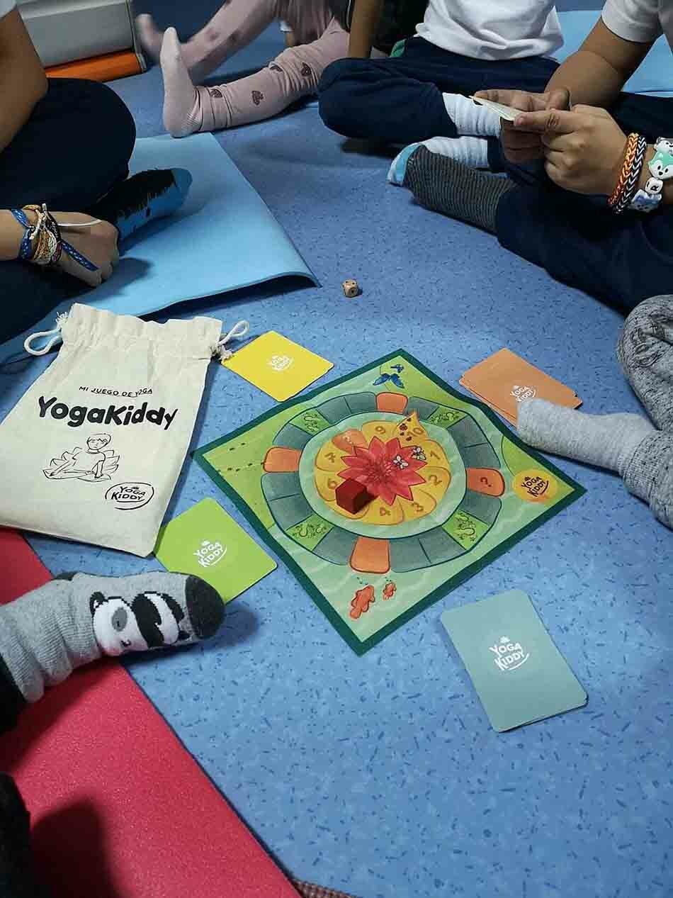

Hoy nos reunimos con Alejandra quien participó de nuestra formación de Monitor en Yoga Infantil en la ciudad de Madrid, España en el mes de Septiembre de 2019. Los invitamos a conocerla y a su escuela infantil donde verán que integraron clases de yoga a la rutina semanal de los niños que asisten y actualmente también ofrecen clases extra curriculares de yoga por la tarde para niños escolarizados en otros centros.Escuela Infantil Chupetes🧘♂️💖🧘♀️
Podrán ver que los niños de Arganda del Rey, Madrid ya están disfrutando el material de YogaKiddy en sus clases diarias

Macarena: Hoy estamos junto a Alejandra, ella es de Madrid. Participó de nuestra formación en el mes de Septiembre del año pasado. Cómo estas?
Alejandra: Hola que tal? Muy bien fenomenal
Macarena: Cuándo te iniciaste en el yoga?
Alejandra: Mas o menos serán 4 años que empecé. Fue por una situación personal, no me encontraba bien, tenía mucho estres, estaba muy alterada y dije tengo que buscar algo diferente en mi vida y empecé a tomar clases particulares.
Macarena: En el caso del yoga infantil, cuando decidiste tomar tus clases?
Alejandra: Yo tengo una escuela infantil con mi hermana, donde estamos ahora mismo. Siempre estamos innovando y el año pasado empezando a jugar con los niños sobre todo de 2 y 3 empezamos a hacer prácticas de yoga a partir de youtube y vimos que a los niños les encantaban que disfrutaban muchísimo. Cómo yo soy la que toma las clases de yoga, mi hermana dijo que me forme y busqué la formación de Yogakiddy para tener la titulación, los recursos y un poco mas de abanico a la hora de impartir las clases.
Macarena: En el caso de la formación de yogakiddy, pudiste implementar el material entregado?
Alejandra: Desde el primer día! De hecho todos los recursos que nos enseñaron las profesoras. De verdad que he utilizado todo! El dado, la tela mágica
Macarena: Hay alguna actividad que fue la que más te llamo la atención?
Alejandra: Me gustó mucho la parte experiencial, la del contacto, de expresarnos nosotras mismas donde una guía a la otra. Donde no solo ya eres una niña sino que tienes que vivir una experiencia para transmitir y eso fue lo más enriquecedor para todas. Fueron dos días muy intensos, estuvo genial.
Macarena: Si piensan en algún alumno que se te venga a la cabeza, pudiste tener avances?
Alejandra: Yo tengo un grupo un tanto heterogéneo. Los niños más pequeños que tengo son de 2, 3 hay uno de 4, otro de 10 y uno de 8. El avance sobre todo en los mayores, flexibilidad, concentración, en la hora de compartir, de respetar a otros es donde mayor avance veo. En los pequeños les cuesta la relajación o seguir la dinámica de la clase, han aprendido a seguir la secuencia, saben que tienen que estar en silencio o si tienen libertad de desplazarse por la sala. De los mayores veo mucho autoestima que me dicen: mira Alejandra ya soy capaz!
Macarena: Me gustaría que podamos invitar a la gente de Madrid para que lleven a sus niños
Alejandra: Nosotros iniciamos las clases en Octubre, es un proyecto piloto actualmente son siete alumnos.En la escuela tenemos el yoga dos días dispuestos en la semana (martes y jueves) unos treinta minutos. Luego tenemos la extra escolar que es lo que implementamos este año y las clases la tenemos los miércoles de 17:45 a 18:45.
Macarena: Si quisieran llevar a sus niños a partir de febrero se puede?
Alejandra: No hay ningún problema siempre estamos abiertos, de hecho ofrecemos una clase gratuita para que prueben y vean un poco el funcionamiento. Por ejemplo el 5 de febrero vamos a hacer una clase con las mamas así ven como hacen sus niños y aprender el funcionamiento. Pueden inscribirse cuando quieran!
Macarena: Podrías dejarnos el contacto así pueden hablar con ellos
Alejandra: Somos la Escuela Infantil Chupetes de Arganda del Rey, Madrid y allí tienen toda la información. La profesora de psicomotricidad y yoga soy yo, Alejandra. El instagram es:Escuela Infantil Chupetes
Macarena: Invitamos a la gente de allí que pueda llevar a sus niños como actividad extra curricular
Alejandra: Claro, claro que sí!
Macarena: Muchisimas gracias por tu tiempo Ale
Alejandra: Nada, a vosotras mil gracias.
Descubre las fechas de nuestras proximas Formaciones de yoga para niños